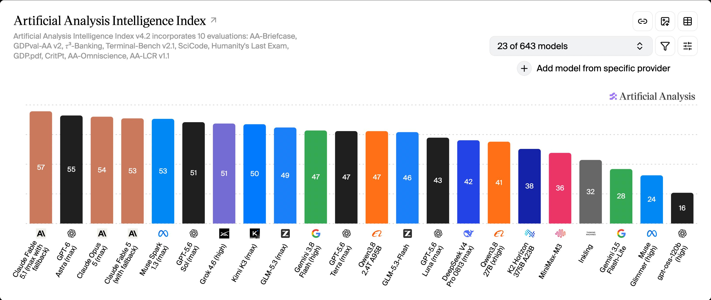

| Kalendarium: linia czasu czerwca–września | s. 3 |
| Wyścig flagowców: GPT-6 Astra · Claude · Gemini | s. 4 |
| Wojna cenowa: tokeny tanieją o 80% | s. 5 |
| Open-source dogania chmurę: Kimi K3 i spółka | s. 6 |
| Malejący gap frontier vs open: 15 pkt → 3 pkt | s. 7 |
| Kontekst miliona tokenów: nowa normalność | s. 8 |
| 2026 = rok agentów: model, który obsługuje komputer | s. 9 |
| Mega-run: 10 000 agentów kontra problem milenijny | s. 10 |
| Afera: zarzut kradzieży pracy matematyków | s. 11 |
| Konsekwencje dla własności intelektualnej | s. 12 |
| Wideo: konsolidacja rynku, Sora znika | s. 13 |
| Sprzęt: Vera Rubin i drogie pamięci | s. 14 |
| Regulacje: AI Act przechodzi do egzekucji | s. 15 |
| Bezpieczeństwo i co dalej: giganci w jednym szeregu | s. 16 |
| Wnioski dla Was: cztery rzeczy do zapamiętania | s. 17 |
| Data | Wydarzenie | Dlaczego ważne |
|---|---|---|
| 30.06 | Claude Sonnet 5 (Anthropic) | Wynik 63,2% na benchmarku programistycznym SWE-bench Pro – czołówka staje się dostępna w niższej półce cenowej |
| 27.07 | Kimi K3 (Moonshot) – otwarte wagi | Chiński model klasy flagowej do pobrania – zaczyna się realny nacisk cenowy na zachodnie laboratoria |
| 2.08 | AI Act: art. 50 w egzekucji | Unijne Biuro AI zaczyna egzekwować obowiązki przejrzystości – regulacje przestają być teorią |
| 1.09 | Claude Fable 5.1 · start mega-runu OpenAI | Ceny odczytu z cache −75%; OpenAI rusza z agentowym oblężeniem problemów milenijnych |
| 2–3.09 | Gemini 3.8 Flash · GPT-6 Astra | Nowy flagowiec OpenAI: 1,05 mln tokenów kontekstu, sterowanie komputerem, certyfikat „krytycznego ryzyka cyber" – o tym za chwilę |
| 8–9.09 | OpenAI ogłasza dowód Navier–Stokes | Pół doby wcześniej matematyk Tristan Buckmaster oskarża firmę o wykorzystanie jego nieopublikowanej pracy – początek afery |
| 11.09 | Deklaracja 25 medalistów Fieldsa | Elita matematyki oskarża laboratoria AI o „poważne niezgranie celów" (severe misalignment) – pełny slajd 12 |
| 15.09 | OpenAI + Anthropic + Google: wspólny standard bezpieczeństwa | Dawny rywal zaczyna współpracować nad normami – wspólny front bezpieczeństwa zamiast wojny |
| 24.09 | Wyłączenie API Sory (OpenAI) | OpenAI wycofuje się z wideo jako usługi – rynek konsoliduje się wokół Veo i Klinga |
| 1.09 | UE: pierwsze żądania informacji do 30+ firm AI · Claude Fable 5.1 | Pierwsza fala kontroli AI Act w praktyce; Anthropic tnie ceny cache o 75% |
| Model | Premiera | Co nowego | Co to oznacza dla Was |
|---|---|---|---|
| GPT-6 Astra (OpenAI) | 3.09 | 1,05 mln tokenów kontekstu · sterowanie komputerem (computer use) · pierwszy model z certyfikatem „Critical cyber" w ramach Preparedness Framework · 10 / 50 USD za mln tokenów (wejście / wyjście) | Model pozycjonowany nie jako „lepszy czat", tylko jako pracownik biurowy – klika, pisze kod, działa godzinami. Najwyższy poziom ryzyka cybernetycznego oznacza: moc, którą trzeba świadomie kontrolować |
| Claude Sonnet 5 → Fable 5.1 (Anthropic) | 30.06 → 1.09 | Sonnet 5: 63,2% SWE-bench Pro (programowanie z prawdziwych zgłoszeń) · Fable 5.1: ceny odczytu z pamięci podręcznej −75%, celowo pod długie, wieloetapowe pracy agentowe | Anthropic celuje w programistów i agentów, nie w konwersacyjny ranking – i agresywnie tną koszt pracy agentów, które czytają ten sam kontekst wielokrotnie |
| Gemini 3.8 Flash (Google) | 2.09 | GA (dostępność ogólna) · deklaracja: „najinteliglejszy model Flash", projektowany pod inżynierię o długim horyzoncie i agentów autonomicznych | Google wypuszcza trzeci model Flash w sześć tygodni – tempo iteracji samo w sobie jest wiadomością: połowa semestru i model, na którym uczyliście się w marcu, już nie istnieje w ofercie |
| Model | Kiedy | Co oferuje | Dlaczego to moment zwrotny |
|---|---|---|---|
| Kimi K3 (Moonshot AI, Chiny) | 27.07 – otwarte wagi | Model klasy flagowej do ściągnięcia; od 18.09 dostępny też przez Amazon Bedrock | Chińska jakość wchodzi do zachodniej dystrybucji korporacyjnej – nie trzeba już „wierzyć na słowo", dostajecie go w tej samej konsoli co AWS-owe usługi |
| DeepSeek V4 (kontekst: wiosna) | kwiecień–lato | Milion tokenów kontekstu w cenie „dla każdego"; architektura MoE: ok. 1,6 bln parametrów łącznie, z czego ~49 mld aktywnych | Pokazał, że miliony tokenów kontekstu nie muszą być premium – wymusił obniżki u zachodnich graczy (slajd 5) |
| GLM-5.x (Zhipu/Z.ai) | lato | Seria konkurencyjnych modeli otwartych; w praktyce serwowanych także przez polskie centra obliczeniowe | Dowód lokalny: polskie instytucje serwują modele klasy SOTA z polskich serwerów – zgodnie z unijnymi regułami danych, bez transferu do USA |
| Qwen3-Coder-Next (Alibaba) | lato | Linia pod programistykę agentowe | W rankingu otwartych modeli 2026 czołówka jest niemal w całości azjatycka – Stany i Europa grają w chmurze, Azja rozdaje wagi |
| #1 chmura vs #1 open | Wyniki | Gap |
|---|---|---|
| Wrzesień 2025 | ~63 vs ~48 pkt | 15–20 pkt |
| Wrzesień 2026 | 63 vs 60 pkt | 3 punkty |

Kontekst (context window) to „pamięć krótkotrwała" modelu: wszystko, co mieści się w jednym zapytaniu. Jeszcze w zeszłym roku milion tokenów był demonstracją; dziś to parametr użytkowy:
Równania Naviera–Stokesa (płynięcie cieczy – od prądu rzeki po przepływ krwi) to jeden z siedmiu Problemów Milenijnych Instytutu Claya, z nagrodą 1 mln USD, nierozwiązany od ponad 90 lat.
1 września 2026 OpenAI rusza z agentowym oblężeniem wszystkich sześciu otwartych problemów – 88 godzin pracy systemu multi-agentowego:
Wynik ogłoszony 8 września w południe: praca na 166 stron + formalizacja w Lean (interaktywne narzędzie do dowodzenia – „kalkulator", który mechanicznie sprawdza każdy krok dowodu), twierdząca rozwiązanie części problemu. Model: wewnętrzny, opisywany jako „znacznie bardziej zdolny niż GPT-6 Astra", trenowany od… 28 sierpnia. Zapamiętajcie tę datę.
Tristan Buckmaster i Levent Alpöge (pracownik… Anthropic – konkurencyjnej firmy) pracowali nad pokrewnym problemem rok, w tajemnicy. Ich wyniki (przełom dla szczególnego przypadku – równań Eulera): uzyskane 15 sierpnia, zweryfikowane w Lean tydzień później. Planowali ogłosić później – chcieli napisać ludzki, czytelny artykuł, będący efektem własnego zrozumienia dowodu.
Używali w pracy narzędzi obu firm – w tym Codexa, agenta OpenAI.
11 września – trzy dni po aferze: 25 medalistów Fieldsa (matematyczny odpowiednik Nobla; wśród sygnatariuszy m.in. Terence Tao, Peter Scholze, Cédric Villani, Simon Donaldson) podpisuje publiczną deklarację „A Severe Misalignment of AI in Mathematics" (mathandai.org):
Równolegle, w USA: koncerny medialne (New York Times i inni) wnioskują o sankcje przeciw OpenAI w procesie o prawa autorskie – zarzut: firma rzekomo kłamała sądowi co do możliwości przeszukiwania własnych logów czatów i zbiorów treningowych. Ta sama oś sporu: czyje dane, czyje cytaty, czyja atrybucja.
| Data | Co się stało | Co to oznacza dla Was |
|---|---|---|
| 2 sierpnia | Obowiązki przejrzystości (art. 50) obowiązują wprost; unijne Biuro AI i organy krajowe zaczęły egzekwować (m.in. oznaczanie treści generowanych) | Produkt z AI na zaliczenie musi informować, że treść jest generowana |
| 1 września | Pierwsza fala żądań informacji – Komisja Europejska rozesłała zapytania do ponad 30 firm AI na świecie | To nie teoria: pierwsza realna akcja kontrolna AI Act |
| Pakiet „AI Omnibus” | Unijny pakiet naprawczy (nowelizacja AI Act) przesunął część najcięższych obowiązków – m.in. dla modeli ogólnego przeznaczenia (GPAI) – na późniejsze terminy | Kalendarz się zmienia – śledźcie terminy, nie nagłówki z 2024 r. |
| Cały okres | Rosnący rozjazd USA–UE: Waszyngton odciąga się od regulacji „specyficznych dla technologii", Bruksela idzie w egzekwowanie; w Polsce trwają prace nad krajową ustawą o systemach AI | Produkt AI sprzedawany globalnie = dwie rzeczywistości prawne naraz |
| AI Act: kolejne fale obowiązków i kontrole |
| Navier–Stokes: werdykt Instytutu Claya (proces „celowo powolny") i recenzje dowodu OpenAI |
| Premiery: zapowiedziane kolejne flagowce i iteracje Flash |
| Afera IP: czy dojdzie do procesu o prawa do „pracy w toku"? |
| Sprzęt: rampa produkcyjna Veri Rubin i ceny pamięci |
1Inteligencja potaniała o rząd wielkości – budujcie, nie czekajcie. Eksperyment z modelem czołówki kosztuje mniej niż kawa. Wszystko, co odkładaliście „na później, gdy będzie taniej", właśnie stało się projektem na ten semestr.
2Wagi otwarte = możecie mieć SOTA u siebie. Modele klasy flagowej są do pobrania; lokalne centra (w tym polskie) serwują je zgodnie z unijnymi regułami. Pytanie „chmura czy lokalnie" to już pytanie biznesowe, nie techniczne.
3Agenci i długi kontekst zmieniają sposób programowania. Model, który pamięta milion tokenów i klika w interfejs, to nie „lepszy czat" – to nowy typ wykonawcy. Architektury, które uczyliście się w zeszłym roku, właśnie się prostują.
4Wasza niepublikowana praca w cudzych narzędziach to ryzyko. Afera Navier–Stokes pokazała cały łańuch: szkic w narzędziu → wyciek/przetrenowanie → „samodzielny" wynik AI → spór o autorstwo, o milion dolarów. Prawo autorskie chroni od ustalenia utworu, ale dowód autorstwa w świecie logów cudzej firmy – to nowy problem waszego pokolenia. Higiena informacji staje się kompetencją zawodową.
Dziękuję za uwagę – zapraszam do pytań